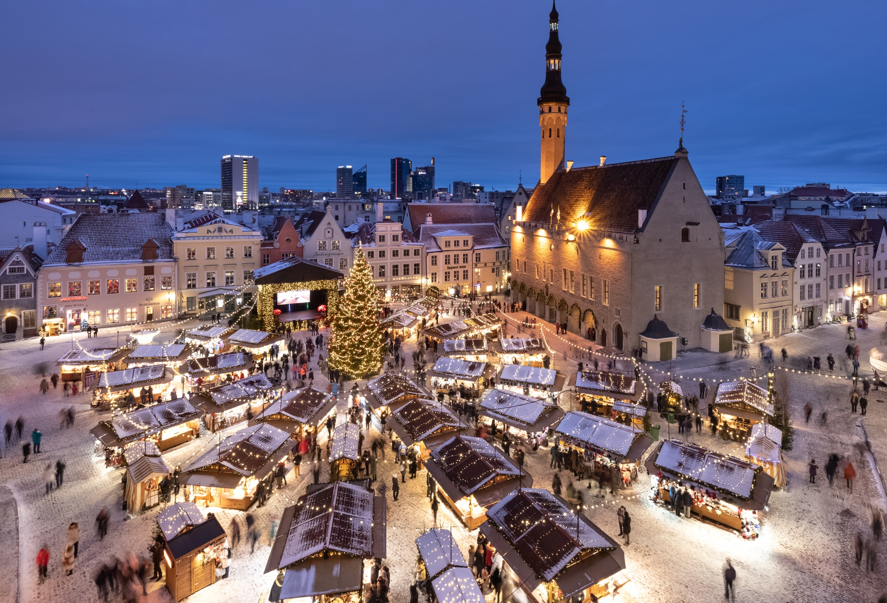

#7 — Tallinn
📍 Estonia | Medieval Christmas Magic

DESCRIPTION
Tallinn celebrates Christmas in its historic Town Hall Square. A decorated tree rises above market stalls selling crafts, snacks, and warm drinks. The medieval buildings and narrow streets provide a festive scene that feels both traditional and welcoming.
Things to Do: Visit Town Hall Square and browse the Christmas market.
Best Time to Visit: Late November through December; check the current market calendar.
TRAVEL INFORMATION
How to Get There: Reach Tallinn by air or ferry, then walk or take public transit to the Old Town.
Travel Highlights: Visit the Town Hall Square market and walk the historic lanes under Christmas lights.
Travel Tips: The old streets can be slippery in winter, so choose grippy footwear.
Important Note: Market schedules, transportation services, and opening hours may change each year. Check current details before your trip.